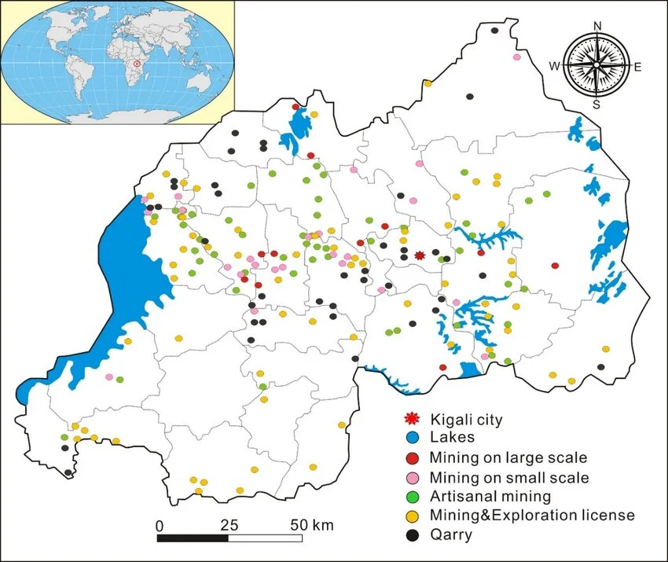

Worked on GIS and geospatial workflows supporting geological mapping, mineral resource management, and spatial database development. The project involved transforming geographic data into accurate maps and decision-support information.
This experience developed a strong foundation in geospatial data management, mapping workflows, and spatial analysis, which later supported my transition into marine GIS and hydrographic data processing.
← Back to Projects